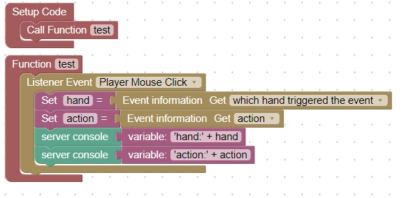

Mouse Click Types
Note: In Minecraft when you left or right click the mouse, you get 2 events one from the main hand and one from the off-hand
To make sure that you don't count the click twice, add logic:

There are also 4 types of mouse clicks that can occur:
- Left click on air
- Left click on block
- Right click on air
- Right click on block
This code will print the type of click in the server console:

You should then see on the server:

To handle the different types of mouse clicks you can make an if-else if structure:

Note: "click on air" does not necessarily mean you are clicking in the sky. You may be pointed at a block, but the block is out of range to be selected
The last thing you need to know about mouse clicks is that sometimes right clicks do not occur unless you have something in your off-hand
Test out this code:

A right click in the air may not trigger an event if nothing is selected
We will need to instruct the player to select an item for a right-click hand combination
You can place an item in the off-hand by using the 'f' key.
Also by selecting an item in the hotbar with the mouse wheel will cause a right click to occur in the air
Left-click does not have any restriction